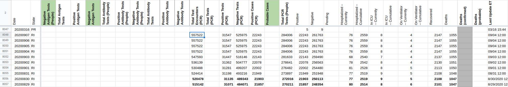

| Date | Number | Title |
|---|---|---|
| December 26, 2020, 9:13 AM PST | 1029 | [RI] Clear confirmed cases |
| December 13, 2020, 11:27 AM PST | 1011 | [RI] Clear Positive Cases (PCR) |
| August 20, 2020, 2:17 PM PDT | 781 | [RI] Incorrect value entered on 8/19 for Negative |
| August 19, 2020, 9:25 AM PDT | 778 | [RI] Bad data on website for 3/2 total tests |
| August 14, 2020, 11:23 AM PDT | 764 | [RI] backfill new encounters data to populate that column |
| July 29, 2020, 8:15 PM PDT | 697 | [RI] Revisit time series data, especially stale weekend numbers |
| July 8, 2020, 5:02 PM PDT | 591 | [RI] 7/8 now provides tests & negatives in people in addition to specimens. Backfill of full data series |
| June 25, 2020, 6:29 AM PDT | 523 | [RI] PCL Historicals and WS2 |
| April 24, 2020, 9:08 PM PDT | 286 | [States Daily CSV] RI positiveIncrease is negative for 2020-03-07 |
| April 20, 2020, 5:34 PM PDT | 241 | [RI] 4/19 Data inconsistency |
| April 3, 2020, 7:32 AM PDT | 154 | CA, NY & RI inicuCumulative missing |
#1029: [RI] Clear confirmed cases
Issue number 1029
karaschechtman opened this issue on December 26, 2020, 9:13 AM PST
Labels Data quality
State or US: RI
Describe the problem Quote from our outreach to RI: "RI reports antigen and PCR tests as case/positive test counts and both are included in total test counts. " We should not be capturing these cases in confirmed.
Link to data source N/A
Comments
#1011: [RI] Clear Positive Cases (PCR)
Issue number 1011
karaschechtman opened this issue on December 13, 2020, 11:27 AM PST
Labels Data quality stale
State or US: RI
Describe the problem According to outreach 10/22, RI includes antigen positive cases in its case counts. We should clear Positive Cases (PCR).
Link to data source N/A
Comments
This issue has been automatically marked as stale because it has not had recent activity. It will be closed if no further activity occurs. Thank you for your contributions!
#1029
#781: [RI] Incorrect value entered on 8/19 for Negative
Issue number 781
jaclyde opened this issue on August 20, 2020, 2:17 PM PDT
Labels Data quality
State: RI
Problem: Value entered on 8/19 was incorrect updating to value provided from state.
Upon further research it turned out the value did match what the state provided on 8/19. The value was reverted to match that provided by the state.
Comments
#778: [RI] Bad data on website for 3/2 total tests
Issue number 778
MattHilliard opened this issue on August 19, 2020, 9:25 AM PDT
Labels Data quality
State or US: RI
Describe the problem
The data for total tests in Rhode Island on 3/2 is clearly mistaken on both the website and in the API:

In the source data, there's a blank cell on 3/1 that may be causing the issue:

Comments
Fixed by @muamichali
#764: [RI] backfill new encounters data to populate that column
Issue number 764
theomichel opened this issue on August 14, 2020, 11:23 AM PDT
Labels Backfill Data quality
Target Date: TBD, likely 8/17 Overview: https://covid-tracking.slack.com/archives/C014K4D6R26/p1597330970130300 Potential challenges: Need to figure out what to do with the existing total tests PCR data/column
Comments
- We populated the full time series of total test encounters based on the data from 8/12-8/17 in the Trends tab in the spreadsheet RI publishes.
- We removed the values of
Total Tests (PCR)after 8/12 because RI changed the methodology of how they calculate this value on 8/12 and it now reflects test encounters.
Dating:
RI posts daily numbers on the dashboard + trends in a Google spreadsheet.
Earlier today, we filled the new Test Encounters column, dating it differently than the rest of the data for RI.
During pub-shift, every day, we report the numbers from the previous day. When we backfill, we should continue this reporting scheme.
#697: [RI] Revisit time series data, especially stale weekend numbers
Issue number 697
space-buzzer opened this issue on July 29, 2020, 8:15 PM PDT
Labels Backfill not stale
Rhode Island publishes a Google Spreadsheet with full time series for all the metrics we capture. We need to check whether we miss weekend updates because the dashboard is frozen, and backfill from RI's data if this is the case
Comments
We concluded that we aren't missing cases in the cumulative counts, but our graphs are ugly with giant dips on weekends followed by spikes on Mondays, because RI doesn't update their dashboard on the weekends.
We decided to go ahead and do a very targeted weekly backfill, where every Monday we backfill in RI's cumulative totals for Saturday and Sunday from their google sheet of data. This will smooth the graph somewhat, although it'll leave a small spike on saturday.
The likely reason for the saturday spike is that the monday spikes were actually due to 2 factors:
- the saturday+sunday cases were showing up on Monday
- the cases from other prior days, that happened to arrive at the website on Monday, would also show up on Monday.
We’ve solved #1, but we have moved #2 to showing up on Saturday instead of Monday.
The bold cells are the values that we changed. (@space-buzzer made the change)
This is now a weekly task and we (@space-buzzer @muamichali and I) agreed that we'll use a slack shiftbot for the weekly reminder. So now the work for this issue is to create and train the shift bot. : )
I created a workflow for mondays at 11am with the RI reminder. I don’t see a way to manually trigger it now to test it, so I'm moving this card to "needs verification" and set myself a separate reminder for next Monday.
Update 2020-08-17


We shifted the days we filled by 1 day, to be compatible with how pub-shift is capturing the numbers. Every day, during pub shift, we capture numbers for the previous day (and they're added to todays count). For weekend update, we should continue using the same strategy, otherwise, we report the "Sunday" number twice -- for Sunday and Monday
To remedy it, weekend update will behave exactly like pub-shift wrt day attribution

Another week, another update

Laber day weekend


Weekend fill for 9/12 and 9/13:
Rows edited: 2
RI 2020-09-13 positive: 23098 (was 22905) negative: 284385 (was 280118) hospitalizedCumulative: 2644 (was 2620) inIcuCurrently: 7 (was 8) onVentilatorCurrently: 4 (was 3) recovered: 2223 (was 2201) death: 1075 (was 1071) positiveTestsViral: 32660 (was 32589) negativeTestsViral: 600850 (was 583094) positiveCasesViral: 23098 (was 22905) totalTestEncountersViral: 633510 (was 615683) totalTestsPeopleViral: 307483 (was 303023)
RI 2020-09-12 positive: 22999 (was 22905) negative: 283137 (was 280118) hospitalizedCumulative: 2639 (was 2620) onVentilatorCurrently: 4 (was 3) recovered: 2220 (was 2201) death: 1072 (was 1071) positiveTestsViral: 32558 (was 32589) negativeTestsViral: 595533 (was 583094) positiveCasesViral: 22999 (was 22905) totalTestEncountersViral: 628091 (was 615683) totalTestsPeopleViral: 306136 (was 303023)
2020-09-21 All done!

@space-buzzer @theomichel I think this was solved with RI bot! Unless we need to log those edits here, I'm going to close this issue.
#591: [RI] 7/8 now provides tests & negatives in people in addition to specimens. Backfill of full data series
Issue number 591
space-buzzer opened this issue on July 8, 2020, 5:02 PM PDT
Labels Data quality
We can backfill specimens information for RI and also update the way "Negative"s are reported
Link to datasource: https://docs.google.com/spreadsheets/d/1c2QrNMz8pIbYEKzMJL7Uh2dtThOJa2j1sSMwiDo5Gz4/edit#gid=1592746937
Comments
Updated the following columns:
- Specimens:
totalTestsViralpositiveTestsViralnegativeTestsViral
- People:
positiveCasesViraltotalTestResultspositivenegative
The attached file shows the before/after values.
Notice RI is now publishing full data about specimens (total number of tests, with a breakdown to positive and negative results).
Additionally, RI publishes unique people tested, including people with positive and negative results. This is now used as the source for positiveCasesViral, positive and negative API fields.

#523: [RI] PCL Historicals and WS2
Issue number 523
the-daniel-lin opened this issue on June 25, 2020, 6:29 AM PDT
Labels PCL/SVP Historicals
Death values are historically recorded in both the "Deaths" and "Deaths (Confirmed)" columns for RI. However, RI’s death values represent lumped probable and confirmed figures, so they should only be recorded in the main "Deaths" field.
Comments
Confirmed the data matched "Deaths", then removed "Deaths (Confirmed)" for RI between today and 5/12.
Updated RI's source note for Deaths (confirmed) to Not Provided and explained in RI private notes
DC'd by DZL - 6/26 9:24
#286: [States Daily CSV] RI positiveIncrease is negative for 2020-03-07
Issue number 286
acobolew opened this issue on April 24, 2020, 9:08 PM PDT
Labels not stale
RI has positiveIncrease < 0 on 2020-03-07
covidtracking.dt <- fread('https://covidtracking.com/api/v1/states/daily.csv') covidtracking.dt[, date := as.Date(as.character(date), '%Y%m%d')] covidtracking.dt[order(date, decreasing=FALSE)][ , .(date, state, positive, positiveIncrease) ][positiveIncrease < 0] date state positive positiveIncrease 1: 2020-03-07 RI 2 -1 2: 2020-04-20 GU 133 -3 3: 2020-04-22 HI 582 -2 4: 2020-04-22 PR 915 -383
Comments
This issue has been automatically marked as stale because it has not had recent activity. It will be closed if no further activity occurs. Thank you for your contributions!
This issue has been closed because it was stale for 15 days, and there was no further activity on it for 10 days. You can feel free to re-open it if the issue is important, and label it as "not stale."
#241: [RI] 4/19 Data inconsistency
Issue number 241
iservin opened this issue on April 20, 2020, 5:34 PM PDT
It appears today RI DOH retroactively changed their positive test numbers for Sunday 4/19.
They had originally published 4,706 positive tests as a total as of Sunday. Today the historical numbers for that date now shows 4,751 positive tests.
This is why the calculated new positive case number 384 is out of sync with the DOH's published number of 339.
Comments
This issue has been automatically marked as stale because it has not had recent activity. It will be closed if no further activity occurs. Thank you for your contributions!
RI DOH's day by day historical data: https://docs.google.com/spreadsheets/d/1n-zMS9Al94CPj_Tc3K7Adin-tN9x1RSjjx2UzJ4SV7Q/edit#gid=1998687529
There are noticeable revisions upwards between our data/what RI was reporting in the past vs. what RI reports now in the spreadsheet for 4/18-4/23. Updating pos, cur hosp, cum hosp, and deaths for those days (negs were also reported but were the same as our data).
Our data before:
Our data after:
RI state data as of 5/6/2020:

In addition, we noticed there was a one-day lag for positives for all the RI data, so changed the timestamps on the last updated field to 00:00 the day of the check for each day of data.
Before:
 After:
After:

Because there may be other discrepancies hiding in the RI DOH spreadsheet, I will write a script to compare the two csvs to catch any further potential changes
#154: CA, NY & RI inicuCumulative missing
Issue number 154
xaminmo opened this issue on April 3, 2020, 7:32 AM PDT
Labels Data quality
On 04-02, the inicuCumulative value is missing for CA, NY and RI. These should be the greater of the last value, or the currently in ICU, but it is probably a data import error.
This error affects the state and US, both for 04-02 and for "current".
Comments
This is related to COVID19Tracking/covid-tracking-data#26
Thanks @xaminmo! Forwarding to our data team
Also, Indiana just showed up missing cumulative ICU.
Duplicate of #132 and you can find the resolution process on that issue
Changes (10).txt